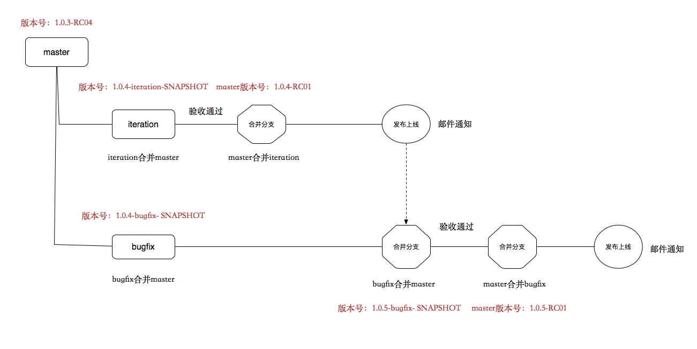
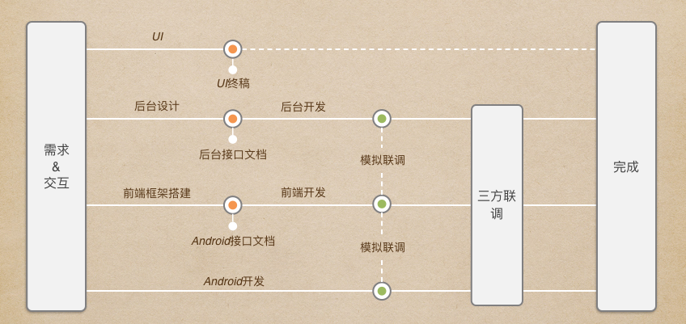

团队概要
人才梯队
- 人员考量
- 人员层次
- 新人（成长速度、未来可塑性）
- 偏业务（任务完成度）
- 偏架构（团队贡献值）
前端工程化
自动化构建工具
- 前后端耦合 -> 解耦 -> fis2 -> fis3 -> grunt -> gulp + webpack -> rollup
- 3、4年的时间内，我们的构建工具和方式更新迭代这么快
- 前端项目复杂度增加，推进工程化快速前行
- 新的前端技术和框架出现，需要新的工具和特性支持
- 同样的功能需求（例如代码压缩），有了更优解
- 更换如此频繁，真的好吗
- 大团队：自研或者深度改造，来保证稳定（至少对外api、使用方式稳定）
- 小组织：学习、推动成本低，而且还能get到新技能和新思路
- 根据业务需求和技术方案的不同，定制化自身的工具插件
- 自研的平台和内部仓库，需要定制化的构建功能
- 自研的缓存方案或者其它微创新，需要定制化的构建功能
- 如何保证步调一致
- 优秀的员工总是会主动找到最优的选择
- 一定的技术和业务区间内，最优选择往往只有一个
- 以分享和导师制带动整个团队一同前行
规范与标准
- 框架、结构
- 代码检查与review
- 理想情况
- 构建阶段，使用eslint完成风格和语法检查，Mocha完成单元测试等
- 普通项目，结对review；核心模块，群体review
- 实际情况
- 前端项目周期短、需求多而杂，代码提交频率高，涉及项目多
- 人员有限，不可能每个项目都是多人参与（其实也没必要，核心项目做到有备份就行了，大概50%）
- 实际情况的解决方式
- 核心模块和组件库的组件，重点reivew
- 普通业务新人实现的，重点review，其它的抽样review
- 寻找和培养优秀代码素养的人员，参与review和分享
- 提高效率和人员素养，往理想情况靠拢
- 工具与组件可控
- 现状
- 泡沫化的时代，数据爆发的时代，需要适度的克制与抉择
- 我们要紧跟时代的步伐，也要控制项目的基本稳定和开发、交接成本
- 所以要适度控制占用一定时间与成本、为了图新鲜、与业务不匹配或者对其一知半解的新技术、组件等
- 例外
- 组织自研的提高工作效率的技术性项目或者分享
- 在这些领域可以随心发散
- 但是，时间和精力有限，不要化太多时间，去学习昙花一现的所以牛逼的新技术
- 流程统一
- git分支使用流程 
- 项目提测与发布流程
- 多方合作联合开发流程 
生态完善
自主意识
- 突破舒适区
- 产生成就感（打破业务团队枯燥的步调）
- 共享思维（团队性质、普遍适用性，非私人产物）
平台搭建
- 基础平台
- 前端监控平台（线上性能、报错等信息记录与分析，并作邮件反馈）
- wiki
- 前端内部仓库（通用性组件与多个项目共用的业务性模块）
- 扩展性平台
- 公共架构组提供的平台
氛围与文化
- 分享
- 寻找优秀人员，多分享，多带头
- 尊重、奖励每一位分享者
- 认真对待每一次分享（不要听听就算了，要有文档记录，要在项目中去落地，有提升意义）
- 让分享变得有意思，有成就感，有实际意义
- 积淀
- 通过wiki，积累技术和业务文档
- 通过内部仓库，积累自己的组件库与公用模块
- 最终的目的，每天前进一小步（效能提升）
业务能力提升
执行力
形式主义
- 症状
- 同等能力下，加班多产出少
- 完成任务，质量未知（代码质量、需求还原度等）
- 如何避免
- 结果导向
- 树立优秀榜样
- 定时沟通和疏导
- 平台监控完成的结果与质量
个人主义
- 症状
- 无特殊原因，擅自修改原定流程和规范
- 代码或文档，只有自己看得懂，然后还挺得意
- 不理解，不沟通，爱抱怨
- 如何避免
- 定时沟通和疏导
- 明确团队精神、方向与目标
- 提倡公共性组件、活动的进行
团队定位